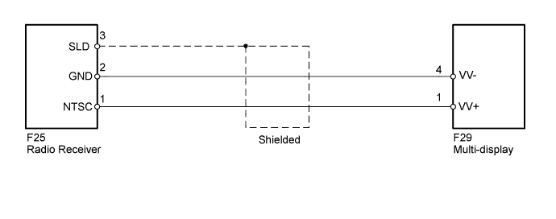
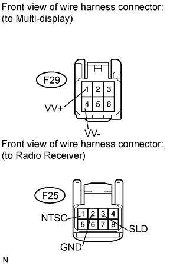
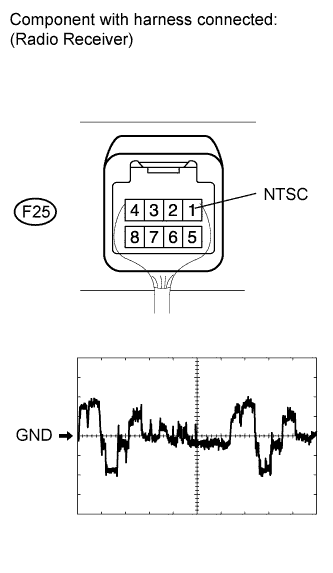

NAVIGATION SYSTEM > Display Signal Circuit between Multi-display and Radio Receiver |

| 1.CHECK HARNESS AND CONNECTOR (MULTI-DISPLAY - RADIO RECEIVER) |
 |
Disconnect the F29 display connector.
Disconnect the F25 receiver connector.
Measure the resistance according to the value(s) in the table below.
| Tester Connection | Condition | Specified Condition |
| F29-4 (VV-) - F25-2 (GND) | Always | Below 1 Ω |
| F29-1 (VV+) - F25-1 (NTSC) | Always | Below 1 Ω |
| F29-4 (VV-) - Body ground | Always | 10 kΩ or higher |
| F29-1 (VV+) - Body ground | Always | 10 kΩ or higher |
| F25-3 (SLD) - Body ground | Always | 10 kΩ or higher |
|
| ||||
| OK | |
| 2.CHECK RADIO RECEIVER ASSEMBLY (NTSC SIGNAL) |
 |
Reconnect the F25 receiver connector.
Check the waveform of the radio receiver using an oscilloscope.
| Item | Content |
| Terminal No. (Symbol) | F25-1 (NTSC) - Body ground |
| Tool setting | 0.2 V/DIV., 10 μsec./DIV. |
| Condition | DVD played on radio receiver |
|
| ||||
| OK | ||
| ||